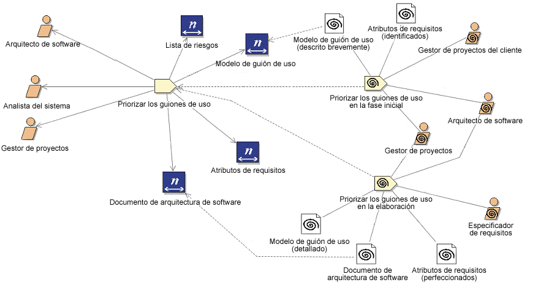

| Concepto: Descriptor |
 |
|
Un descriptor representa una aparición de un elemento de contenido concreto (como la tarea, el rol o el producto de trabajo) en una actividad. Los descriptores proporcionan una representación de tipo proxy para estos elementos de contenido en las estructuras de desglose. Además de simplemente hacer referencia a los elementos de contenido, permite alterar temporalmente las relaciones estructurales de los elementos de contenido definiendo sus propios conjuntos de asociaciones. Los descriptores son un concepto fundamental para realizar la separación de los procesos del contenido del método. Un descriptor puede caracterizarse como un objeto de referencia para un elemento de contenido particular que tenga sus propias relaciones y propiedades. Cuando se crea un descriptor, tiene las mismas relaciones que el elemento de contenido con referencias. Sin embargo, los usuarios pueden modificar estas relaciones para la situación concreta del proceso para la que se ha creado el descriptor. El concepto descriptor permite definir nuevas relaciones y propiedades relacionadas con procesos específicos. Los descriptores no son elementos de contenido y no contienen sus descripciones completas. Por el contrario, hacen referencia a los elementos de contenido en los que se basan. Ejemplo Ejemplo de contenido del método al que hacen referencia los descriptores
|
© Copyright IBM Corp. 1987, 2005 Reservados todos los derechos |